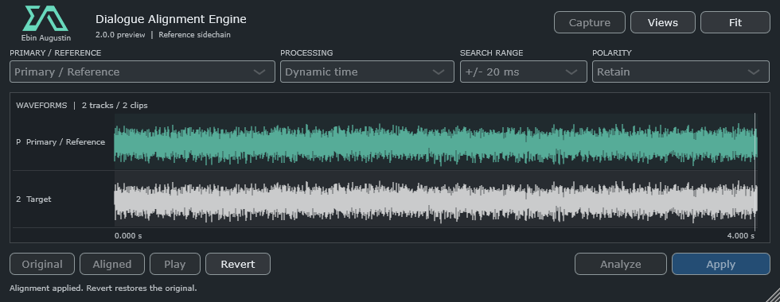

Choose the microphones
Select same-performance items in REAPER, press Capture, and choose the primary track. View all captured clips together.
SELECT → CAPTURE
DIALOGUE ALIGNMENT ENGINE
2.0.0 / DEVELOPMENT PREVIEWExplore timing and phase correction for recordings of the same dialogue performance. Choose a primary microphone, compare the targets, and audition the correction in your session.
An early native preview. Real-session testing and listening validation are still in progress.

01 / WORK WITH YOUR SESSION
The REAPER workflow works with selected primary and target items across microphone tracks. Analysis runs in the background, with visible progress and cancellation.
Select same-performance items in REAPER, press Capture, and choose the primary track. View all captured clips together.
Choose Dynamic time or Time + phase, then Analyze. Compare Original and Aligned before deciding what to keep.
Apply accepts the correction directly. The selected-item workflow writes new audio, rebuilds peaks, and provides Revert and REAPER undo blocks.
Zoom waveforms with the mouse wheel, pan with Shift, and resize lanes with Ctrl. Click or drag to follow the audio in REAPER. Optional delay, spectrum, phase/coherence, correlation and comb views stay under Views until you need them.
02 / FREE WINDOWS DOWNLOAD
Dialogue Alignment Engine 2.0.0-preview
Windows x64 · 35.0 MB ZIP
Includes VST3 with ARA 2 support, an unsigned AAX Native development bundle, documentation, licences and corresponding source. No macOS build is available.
The usual shared Windows folder is C:\Program Files\Common Files\VST3. You can also use your own folder and add it to REAPER’s VST scan paths. There is no installer, and the native plug-in does not require the Lua action.
The included AAX bundle will not load in standard retail Pro Tools until the official signing process is completed. It is AAX Native, with no ARA binding, AudioSuite or HDX DSP workflow.
03 / BEFORE YOU START
Use a copy of your session while evaluating this development preview. The included documentation describes each host workflow and its limits.
Dynamic time estimates changing delay across a recording rather than applying one offset to the whole clip. Time + phase adds experimental adaptive spectral phase correction. Results depend on the shared performance and recording conditions; audition them before applying.
Whole, normal-rate mono or stereo file takes, without take FX or envelopes, stretch markers, loops, grouping, locks, reversed or section sources, or existing inverted take/track polarity. Capture is limited to 512 MB total and ten minutes per clip. Track effects are outside the source analysis.
The VST3 includes an ARA 2 factory and playback/editor integration. Assign the relevant microphone regions through the host’s ARA workflow. In REAPER, use Views → Capture ARA document. Only host-assigned regions are accessible; stretched ARA regions are refused. Host playback and archive round trips still need qualification.
The REAPER selected-item workflow creates 32-bit float WAV files in the project’s Dialogue Alignment Renders folder. Original media files are not overwritten. Keep the render folder when saving, sharing or moving a project. Revert is available for the current capture session; committed media remains after reopening a project.
Four automated checks passed, covering generated-audio engine cases, processor and simulated REAPER integration, VST3/ARA entry points, and unsigned AAX registration. Live REAPER and ARA host workflows, production dialogue listening, large sessions and Pro Tools qualification remain pending. This is not a claim of commercial-product quality or speed parity. See the validation notes in the download.
Yes. The package includes corresponding source and dependency notices. The project uses AGPL-3.0-or-later; preserve the included notices and follow the licence terms when redistributing or modifying it. The older Lua action is a separate tool, with some features that are not yet exposed in the native interface.
Built for dialogue.
Open to discovery.